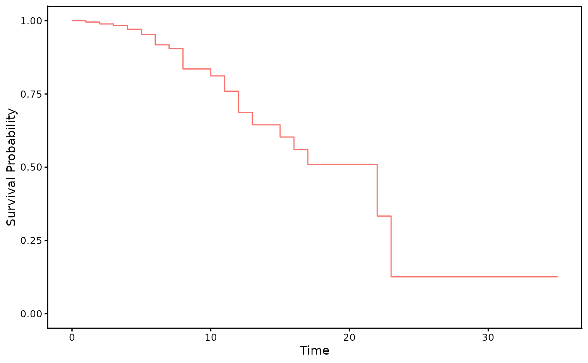
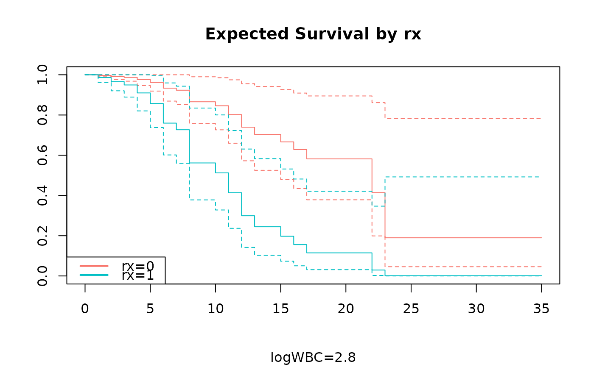
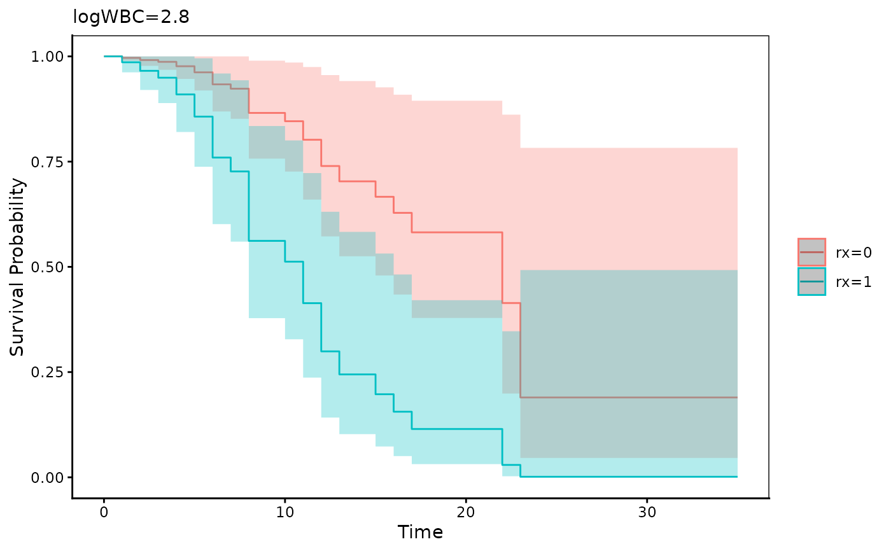

Draw an expected plot
Usage
adjustedPlot(
fit,
xnames = NULL,
pred.values = list(),
newdata = NULL,
maxy.lev = 5,
median = TRUE,
facet = NULL,
se = FALSE,
mark.time = FALSE,
show.median = FALSE,
type = "ggplot",
...
)Arguments
- fit
An object of class "coxph" or "survreg"
- xnames
Character Names of explanatory variable to plot
- pred.values
A list A list of predictor values
- newdata
A data.frame or NULL
- maxy.lev
Integer Maximum unique length of a numeric variable to be treated as categorical variables
- median
Logical
- facet
Character Name of facet variable
- se
logical Whether or not show se
- mark.time
logical Whether or not mark time
- show.median
logical
- type
Character plot type
- ...
further arguments to be passed to plot.survfit
Examples
library(survival)
fit=coxph(Surv(time,status)~rx+logWBC,data=anderson)
adjustedPlot(fit)
#> Warning: `aes_string()` was deprecated in ggplot2 3.0.0.
#> ℹ Please use tidy evaluation idioms with `aes()`.
#> ℹ See also `vignette("ggplot2-in-packages")` for more information.
#> ℹ The deprecated feature was likely used in the autoReg package.
#> Please report the issue at <https://github.com/cardiomoon/autoReg/issues>.

adjustedPlot(fit,xnames="rx",se=TRUE,type="plot")

adjustedPlot(fit,xnames="rx",se=TRUE)

if (FALSE) { # \dontrun{
anderson$WBCgroup=ifelse(anderson$logWBC<=2.73,0,1)
anderson$WBCgroup=factor(anderson$WBCgroup,labels=c("low","high"))
anderson$rx=factor(anderson$rx,labels=c("treatment","control"))
fit=coxph(Surv(time,status)~rx,data=anderson)
adjustedPlot(fit,xnames=c("rx"),show.median=TRUE)
fit=coxph(Surv(time,status)~rx*WBCgroup,data=anderson)
adjustedPlot(fit,xnames=c("rx","WBCgroup"),show.median=TRUE)
adjustedPlot(fit,xnames=c("rx","WBCgroup"),facet="WBCgroup",show.median=TRUE)
data(cancer,package="survival")
fit=coxph(Surv(time,status)~rx+strata(sex)+age+differ,data =colon)
adjustedPlot(fit,xnames=c("sex"))
adjustedPlot(fit,xnames=c("sex"),pred.values=list(age=58,differ=3))
adjustedPlot(fit,xnames=c("sex","rx"),facet="sex")
adjustedPlot(fit,xnames=c("rx","sex","differ"),facet=c("sex","rx"),se=TRUE)
fit <- coxph(Surv(start, stop, event) ~ rx + number + size+ cluster(id), data = bladder2)
adjustedPlot(fit,xnames=c("rx","number","size"),facet=c("rx","size"),maxy.lev=8)
} # }